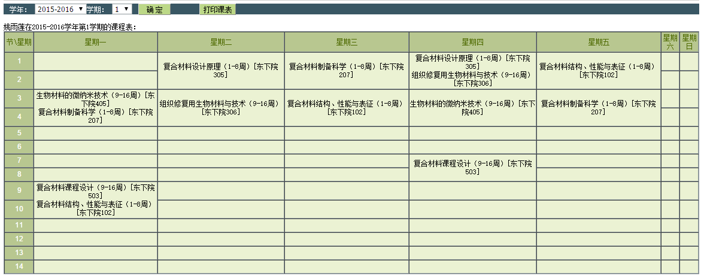

PhD Theses:
- Adam E. Cohen, Nanoscale Mechanics, Cambridge University, defended Dec. 2003
- Adam E. Cohen, Trapping and Manipulating Single Molecules in Solution (formatted for single-sided printing), (formatted for double-sided printing), Stanford University, defended Aug. 2006. See also errata.
Articles:
- M.J. Shon, A.E. Cohen, Nano-mechanical measurements of protein-DNA interactions with a silicon nitride pulley, Nucl. Acids Res., 2015.
- D. Brinks, A.J. Klein, A.E. Cohen, Two-photon lifetime imaging of voltage indicating proteins as a probe of absolute membrane voltage, Biophysical Journal, 109, 914-921, 2015.
- M.P. Chien, C.A. Werley, S.L. Farhi, A.E. Cohen, Photostick: a method for selective isolation of target cells from culture, Chemical Science, 6, 1701-1705, 2015.
- V. Venkatachalam, A.E. Cohen, Imaging GFP-based reporters in neurons with multiwavelength optogenetic control, Biophys. J., 107, 1554-1563, 2014.
- D. Yang, A.E. Cohen, Chirality-Dependent Friction of Bulk Molecular Solids, Langmuir, 30, 9972- 9976, 2014.
- J. Hou, J.M. Kralj, A.D. Douglass, F. Engert, A.E. Cohen, Simultaneous mapping of membrane voltage and calcium in zebrafish heart in vivo reveals chamber-specific development transitions in ionic currents, Front. Physiol., 5, 344, 2014. Supporting videos.
- P. Zou*, Y. Zhao*, A.D. Doughlass, D.R. Hochbaum, D. Brinks, C.A. Werley, D.J. Harrison, R.E. Campbell, A.E. Cohen (*Co-first authors), Bright and fast multicoloured voltage reporters via electrochromic FRET, Nature Communications, 5, 2014.
- D.R. Hochbaum*, Y. Zhao*, S.L. Farhi, N. Klapoetke, C.A. Werley, V. Kapoor, P. Zou, J.M. Kralj, D. Maclaurin, N. Smedemark-Margulies, J.L. Saulnier, G.L. Boulting, C. Straub, Y.K. Cho, M. Melkonian, G.K-S. Wong, D.J. Harrison, V.N. Murthy, B.L. Sebatini, E.S. Boyden, R.E. Campbell, A.E. Cohen (*Co-first authors), All-optical electrophysiology in mammalian neurons using engineered microbial rhodopsins, Nature Methods, 11, 825-833, 2014.
- A.E. Cohen, V. Venkatachalam, Bringing Bioelectricity to Light, Annu. Rev.Biophys., 43, 211-232, 2014.
- J. Hou, V. Venkatachalam, A.E. Cohen, Temporal dynamics of microbial rhodopsin fluorescence reports absolute membrane voltage, Biophysical Journal, 106.3, 639-648, 2014.
- V. Venkatachalam, D. Brinks, D. Maclaurin, D. Hochbaum, J.M. Kralj, A.E. Cohen, Flash Memory: Photochemical Imprinting of Neuronal Action Potentials onto a Microbial Rhodopsin, J. Am. Chem. Soci., 136, 2529-2537 2013.
- J. Park , C.A. Werley, V. Venkatachalam, J.M. Kralj, S.D. Dib-Hajj, S.G. Waxman, A.E. Cohen, Screening Fluorescent Voltage Indicators with Spontaneously Spiking HEK Cells, PLoS ONE, 8, e85221, 2013.
- A. Fields, E. Meyer, A.E. Cohen, Euler buckling and nonlinear kinking of double-stranded DNA, Nucl. Acids Res., 41, 9881-9890, 2013.
- D. Maclaurin*, V. Venkatachalam*, H. Lee, A.E. Cohen, Mechanism of voltage-sensitive fluorescence in a microbial rhodopsin, PNAS, 110, 5939-5944, 2013.
- M. W. Elting, S.R. Leslie, L.S. Churchman, J. Korlach, C.M.J. McFaul, J.S. Leith, M.J. Levene, A.E. Cohen, J.A. Spudich, Single-molecule fluorescence imaging of processive myosin with enhanced background suppression using linear zero-mode waveguides (ZMWs) and convex lens induced confinement (CLIC), Optics Express, 21, 1189-1202, 2013.
- Y. Tang, L. Sun, A. E. Cohen, Chiroptical hot spots in twisted nanowire plasmonic oscillators, Applied Physics Letters, 102, 043103, 2013. Supporting Information.
- A. P. Fields, A. E. Cohen, Optimal tracking of a Brownian particle, Optics Express, 20, 22585-22601, 2012.
- M. J. Shon, A. E. Cohen, Mass action at the single-molecule level, J. Am. Chem. Soc., 134, 14618-14623, 2012. Supporting information.
- J. Hou, A. E. Cohen, Motion induced by asymmetric degradation of hydrogels, Soft Matter, 8, 4616-4624, 2012. Supplementary video, supplementary text.
- J. M. Kralj*, A. D. Douglass*, D. R. Hochbaum*, D. Maclaurin, A. E. Cohen, (*co-first authors) Optical recording of action potentials in mammalian neurons using a microbial rhodopsin, Nature Methods, 9, 90-95, 2012. Supporting Online Text and Videos.
- H. Lee, N. Yang, A. E. Cohen, Mapping nanomagnetic fields using a radical pair reaction, Nano Letters, 11, 5367-5372, 2011.
- H. Bayraktar, A. P. Fields, J. M. Kralj, J. L. Spudich, K. J. Rothschild, A. E. Cohen, Ultrasensitive measurements of microbial rhodopsin photocycles using photochromic FRET, Photochem. & Photobiol. 88, 90-97, 2012.
- J. M. Kralj, D. R. Hochbaum, A. D. Douglass, A. E. Cohen, Electrical Spiking in Escherichia coli Probed with a Fluorescent Voltage-Indicating Protein, Science, 333, 345-348, 2011. Supporting Online Text and Videos.
- A. E. Cohen, A. P. Fields, The Cat That Caught the Canary: What To Do with Single-Molecule Trapping, ACS Nano, 5, 5296-5299, 2011.
- A. P. Fields, A. E. Cohen, Electrokinetic trapping at the one nanometer limit, PNAS, 108, 8937-8942, 2011.
- A. E. Cohen and W. E. Moerner, �Anti-Brownian Traps,� in Encyclopedia of Biophysics, G. C. K. Roberts (Ed.) (Springer, Berlin, Heidelberg, appearing 2012).
- Y. Tang, A. E. Cohen, Enhanced enantioselectivity in excitation of chiral molecules by superchiral light, Science, 332, 333-336, 2011. Supporting Online Material
- N. Yang, A. E. Cohen, Local geometry of electromagnetic fields and its role in molecular multipole transitions, J. Phys. Chem. B, 115, 5304-5311, 2011.
- N. Yang, A. E. Cohen, Optical imaging through scattering media via magnetically modulated fluorescence, Optics Express, 18, 25461-25467, 2010.
- S. R. Leslie, A. P. Fields, A. E. Cohen, Convex Lens-Induced Confinement for Imaging Single Molecules, Anal. Chem., 82, 6224�6229, 2010.
- Y. Tang, A. E. Cohen, Optical chirality and its interaction with matter, Phys. Rev. Lett (cover story), 104,163901, 2010.
- A. P. Fields and A. E. Cohen, Anti-Brownian traps for studies on single molecules, Methods in Enzymology, 475, 149-174, 2010.
- A. E. Cohen, A. P. Fields, J. H. Hou, S. Leslie, M. J. Shon, In honor of W. E. Moerner: Confining molecules for single-molecule spectroscopy, Israeli J. Chem, 49, 275-282, 2009.
- A. E. Cohen, Nanomagnetic control of intersystem crossing, J. Phys. Chem. A, 113, 11084�11092, 2009.
- N. Yang, Y. Tang, and A. E. Cohen, Spectroscopy in sculpted fields, Nano Today, 4, 269-279, 2009.
- Y. Tang, T. A. Cook, A. E. Cohen,
Limits on fluorescence detected circular dichroism of single helicene molecules, J. Phys. Chem. A,
113, 6213�6216, 2009.
- See also comment from Barnes et al., and our reply to their comment.
- P. Jain, Y. Xiao, R. Walsworth and A. E. Cohen, Surface Plasmon Resonance Enhanced Magneto-Optics (SuPREMO): Faraday Rotation Enhancement in Gold-Coated Iron Oxide Nanocrystals, NanoLetters, 9, 1644�1650, 2009.
- E. Tran, A. E. Cohen, R. W. Murray, M. A. Rampi and G. M. Whitesides, Redox Site-Mediated Charge Transport in a Hg−SAM//Ru(NH3)63+/2+//SAM−Hg Junction with a Dynamic Interelectrode Separation: Compatibility with Redox Cycling and Electron Hopping Mechanisms, J. Am. Chem. Soc., 131, 2141-2150, 22 Jan. 2009.
- Y. Jiang, Q. Wang, A. E. Cohen, N. Douglas, J. Frydman, W. E. Moerner, Hardware-based anti-Brownian electrokinetic trap (ABEL trap) for single molecules: Control loop simulations and application to ATP binding stoichiometry in multi-subunit enzymes, Proc. SPIE, 7038, 703807, (2008)
- A. E. Cohen, W. E. Moerner: Controlling Brownian motion of single protein molecules and single fluorophores in aqueous buffer, Opt. Express, 16, 6941-6956, 12 May 2008.
- A. E. Cohen, W. E. Moerner: Principal Components Analysis of shape fluctuations of single DNA molecules, PNAS, 104, 12622-12627, 31 July 2007. Journal link and Supporting Material and Movies.
- A. E. Cohen, W. E. Moerner: Internal mechanical response of a polymer in solution, Phys. Rev. Lett., 98, 116001, 14 Mar. 2007. Supplementary material.
- A. E. Cohen and W. E. Moerner: Suppressing Brownian motion of individual biomolecules in solution, PNAS, 103, 4362-4365, 14 Mar. 2006. Journal link and Supporting Material and Movies.
- A. E. Cohen and W. E. Moerner: An all-glass microfluidic cell for the ABEL trap: fabrication and modeling, Proc. SPIE 5930, 2005.
- A. E. Cohen: Control of nanoparticles with arbitrary two-dimensional force fields, Phys. Rev. Lett., 94, 118102, 25 Mar. 2005.
- A. E. Cohen and W. E. Moerner: The Anti-Brownian Electrophoretic trap (ABEL Trap): tabrication and software, Proc. SPIE 5699, 2005.
- S. Mukamel, A. E. Cohen, and U. Harbola: Intermolecular forces and generalized TDDFT response functions in Liouville Space, Time-Dependent Density Functional Theory (eds. M. A. L. Marques, C. A. Ullrich, F. Nogueira, A. Rubio, K. Burke and E. K. U. Gross, Springer, 2006).
- A. E. Cohen and W. E. Moerner: Method for trapping and manipulating nanoscale objects in solution , Appl. Phys. Lett. 86, 093109, 28 Feb. 2005.
- A. E. Cohen and S. Mukamel: Resonant enhancement and dissipation in nonequilibrium van der Waals forces, Phys. Rev. Lett. 91, 233202, 5 Dec. 2003.
- A. E. Cohen: Force-extension curve of a polymer in a high-frequency electric field, Phys. Rev. Lett. 91, 235506, 5 Dec. 2003.
- A. E. Cohen and L. Mahadevan: Kinks, rings, and rackets in filamentous structures, PNAS, 100,12141-12146, 14 Oct. 2003.
- A. E. Cohen: Carbon nanotubes provide a charge, Science (letter to the editor) 300, 1235-1235, 23 May 2003.
- A. E. Cohen and S. Mukamel: A mechanical force accompanies fluorescence resonance energy transfer (FRET), J. Phys. Chem. A 107, 3633-3638, 15 May 2003.
- Holmlin RE, Haag R, Chabinyc ML, Ismagilov RF, Cohen AE, Terfort A, Rampi MA, Whitesides GM: Electron transport through thin organic films in metal-insulator-metal junctions based on self-assembled monolayers, J. Am. Chem. Soc., 123, 5075-5085, 30 May 2001, and Supporting Material.
- A. E. Cohen and R. Kunz: Large-area interdigitated array microelectrodes for electrochemical sensing, Sensors and Actuators B 62, 23-29, 25 Jan 2000.
- J. E. Cohen, C. M. Newman, A. E. Cohen, O. L. Petchey, A. Gonzalez: Spectral mimicry: A method of synthesizing matching time series with different Fourier spectra, Circuits Systems and Signal Processing, 18, 431-442, 1999.
- A. E. Cohen, A. Gonzalez, J. H. Lawton, O. L. Petchey, D. Wildman, J. E. Cohen: A novel experimental apparatus to study the impact of white noise and 1/f noise on animal populations, Proc. Roy. Soc. Lond. B 265, 11-15, 7 Jan 1998.
Patents:
- Adam Cohen: Near-field photolithographic masks and photolithography; nanoscale patterning techniques; apparatus and method therefor, US patent 5,865,978 February 2, 1999
- Charles T. Black, Adam Cohen, Chris Murray, Robert Sandstrom: Scanning probe microscopy tips composed of nanoparticles and methods to form same, US patent 7,282,710 October 16, 2007
- Adam Cohen and W. E. Moerner, Sub-micron object control arrangement and approach therefor, U.S. patent 8,057,655 Nov. 15, 2011
- Adam Cohen and Sabrina Leslie: Convex Lens-Induced Confinement (CLIC) for measuring distributions of molecular sizes, US patent pending
- Adam Cohen, Joel Kralj, Adam Douglass: Optogenetic probes of membrane potential, US patent pending
- Adam Cohen, Dougal Maclaurin, Daniel Hochbaum, Joel Kralj: Systems and methods for imaging at high spatial and/or temporal resolution, US patent pending
- Adam Cohen, Jennifer Hou: Improvement to spinning disk microscopy, US patent pending
Book:
- Let's Go 2000: Peru and Ecuador (Here's a link to the current website)